Классика экзамена. Будем делать на питоне по причине того, что не факт, что на самом экзамене будет кумир. Для того, что питон понимал, что мы сейчас будем черепашить, ему надо импортировать библиотеку `turtle` в самом начале программы. Не переживайте, скорее всего, она уже встроена в ваш пак питона. Проверить это можно собсна запустив программу с попыткой импорта библиотеки turtle. Если не ругается - значит все круто.
Также, это задание можно решать наполовину руками. Однако, не рекомендую этого делать по причине того, что чем больше вы напрягаете мозги здесь, в таких и подобных заданиях, тем меньше у вас остается ментального ресурса на задания, где действительно без головы никуда. Мы будем решать это задание “в лоб”. С одной стороны, у вас это отнимет несколько лишних минут, с другой, вы не устанете от “заметим” и “очевидно, что,,,” и не сделаете ошибок по невнимательности. Особенно если набьете руку с кодом.
Пример 1)
Задание 60248
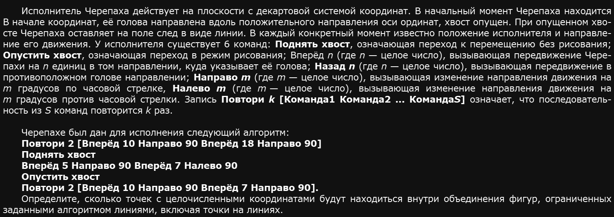
Итак, перво-наперво, мы импортируем библиотеку `turtle`. Делается это вот такой командой:
Разница в том как мы будем обращаться к классам и методам. Во втором случае модуль подключается под именем turtle и перед использованием команд каждый раз требуется писать, что это именно модуль, а не рандомный набор букв:
import turtleturtle.forward(100)turtle.left(90)
В первом же случае мы импортируем все функции и классы из модуля turtle в область видимости, что позволяет нам обращаться с ними без префикса turtle:
from turtle import *forward(100)left(90)
Что гораздо удобнее.
(Небольшое замечание: такой подход действительно быстрее и удобнее, но иногда может приводить к конфликтам имен, если в программе уже есть функции или переменные с такими же именами. На ЕГЭ этого бояться не стоит, но это стоит держать в голове на случай иных импортов, если они понадобятся)
Далее нам нужно задать несколько базовых для работы программы параметров:
Отрисовка
Размер экрана
Коэффициент расширения
Разметку
Команда выхода по клику
По порядку:
Отрисовка - это то, как быстро черепашка будет рисовать. Задается с помощью команды tracer(0) - мгновенная отрисовка либо же speed(x) - скорость рисования черепашки. С tracer не рекомендую экспериментировать, программа может начать выдавать фигню, лучше всегда ставить 0, а вот speed - это буквально скорость рисования. Команда может принимать на вход любые числа и чем число больше - тем больше скорость рисования. Выглядит это так:
Размер экрана - это то, сколько на сколько пикселей будет на экране, который откроется в момент выполнения программы. Обычно ставят где-то 1500х1500 пикселей для удобства. Если изображение будет получаться маленьким - мы отредачим его с помощью коэффициента расширения.
Коэффициент расширения - это числовой параметр, влияющий на размер изображения. Т.е. буквально, если такого коэффициента нет или он равен 1, то изображение будет получаться, например, 100х50 пикселей прямоугольником, а если он равен 10, то 1000х500 прямоугольником. Нужен исключительно для нашего удобства, чтобы было хорошо видно что и как мы делаем.
Разметка - это сетка и точки на координатной плоскости рисунка. Да, у рисунка есть невидимая координатная плоскость, (0, 0) которой находится там же, где спавнится черепашка. Разметка нужна, чтобы иметь возможность считать те точки, о которых пишут в заданиях.
Команда выхода по клику - это вот такая штучка:
exitonclick()
Нужна для того, чтобы программа корректно могла завершить работу. Благодаря ней вы можете просто кликнуть по экрану где ползает черепашка и завершить выполнение программы.
Со всеми подготовительными финтифлюшками программа будет выглядеть так:
from turtle import * #Импорт бибы turtle#tracer(0)speed(2) #Скорость отрисовкиscreensize(1500,1500) #Размер экранаk = 1 #Коэффициент расширенияlt(90) # Изначально черепашка смотрит вправо, ее надо повернуть немногоfor x in range(-25, 25): #Эти циклы нужны для разметки, чтобы нарисовать красные точки, значения подбираются чисто на глаз for y in range(-25, 25): goto(x * k, y * k) dot(3, 'red')exitonclick()
Ну и помимо подготовительных финтифлюшек надо написать еще и саму программу. Тут дело не хитрое - надо просто слово в слово переписать че написано в условии. Будем использовать следующие команды и их сокращения:
Че делает команда
Полное название
Сокращение
Передвигает черепашку вперед (куда она смотрит) на указанное расстояние
forward(distance)
fd(d)
Передвигает черепашку назад (в противоположное направление от того, куда она смотрит) на указанное расстояние
backward(distance)
bk(d)
Поворачивает черепашку вправо (т.е. по часовой стрелке) на указанный угол в градусах
right(angle)
rt(a)
Поворачивает черепашку влево (т.е. против часовой стрелки) на указанный угол в градусах
left(angle)
lt(a)
Передвигает черепашку к указанным координатам (x, y)
goto(x, y)
-
Перемещает черепашку на заданную координату x, оставляя y без изменений.
setx(x)
-
Перемещает черепашку на заданную координату y, оставляя x без изменений.
sety(y)
-
Возвращает черепашку в точку начала координат (0, 0) и сбрасывает её направление на исходное (по умолчанию вверх, или на восток, т.е. 0 градусов).
home()
-
Поворачивает черепашку в определённое направление, задаваемое углом.
setheading(angle)
seth(angle)
Заставляет черепашку описать круг с радиусом radius (если radius положительный, движение происходит против часовой стрелки, если отрицательный — по часовой). Опционально можно задать: extent — угловой размер окружности (по умолчанию 360°), steps — число шагов, для симуляции многоугольника вместо окружности.
circle(radius, extent, steps)
-
Поднимает “перо”, чтобы черепашка двигалась, не оставляя след.
penup()
pu() или up()
Опускает “перо”, чтобы черепашка оставляла след.
pendown()
pd() или down()
Задаёт скорость черепашки.
speed(speed)
-
Эти команды даже сверх нужного вам. В основном, используются стандартные команды передвижения вперед-назад, влево-вправо, повороты, поднятие и опускание пера, скорость и goto. Напишем код, который есть в условии с помощью представленных команд:
for n in range(2): #Алгоритм из условия, строка 1 fd(10*k) rt(90) fd(18*k) rt(90)up() #Алгоритм из условия, строка 2fd(5*k) #Алгоритм из условия, строка 3rt(90)fd(7*k)lt(90)down() #Алгоритм из условия, строка 4for n in range(2): #Алгоритм из условия, строка 5 fd(10*k) rt(90) fd(7*k) rt(90)up() #На будущее, чтобы черепашка не чертила пока рисует разметку
Обратите внимание: мы домножаем на k только команды с движением, команды с поворотом на k не домножаются. Ну и собсна все. Объединяем все части кода:
from turtle import *tracer(0)screensize(1500,1500)k = 30lt(90)for n in range(2): fd(10*k) rt(90) fd(18*k) rt(90)up()fd(5*k)rt(90)fd(7*k)lt(90)down()for n in range(2): fd(10*k) rt(90) fd(7*k) rt(90)up()for x in range(-25, 25): for y in range(-25, 25): goto(x * k, y * k) dot(3, 'red')exitonclick()
По итогу нам выдается что-то вот такое:
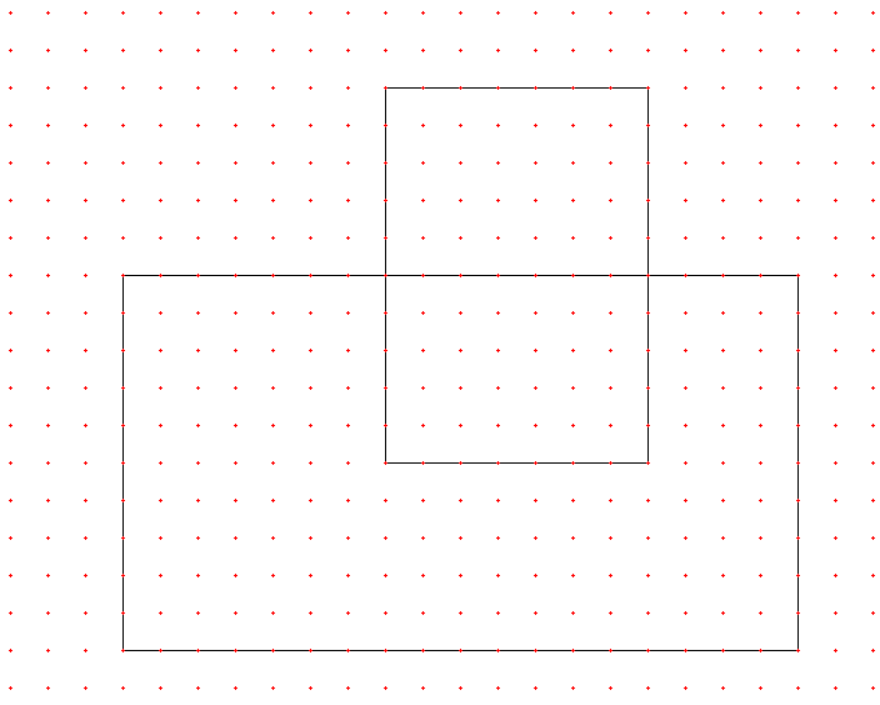
Теперь осталось посчитать т.н. узлы т.е. красные точки. Этот этап требуется делать осторожно т.к. здесь очень легко ошибиться. Во-первых внимательно вчитаемся в условие:
“Определите, сколько точек с целочисленными координатами будут находиться внутри объединения фигур, ограниченных заданными алгоритмом линиями, включая точки на линиях.”
Объединение значит, что надо найти сколько всего точек внутри “суммарной” фигуры. Т.е. мы не ищем точки на пересечении этих фигур, мы ищем все точки, которые относятся к обоим фигурам в т.ч. к их пересечению.
Собсна, никакого алгоритма тут нет, считаем ручками да пальцами. Конечно же не стоит считать каждую точку отдельно, лучше посчитать через площади:
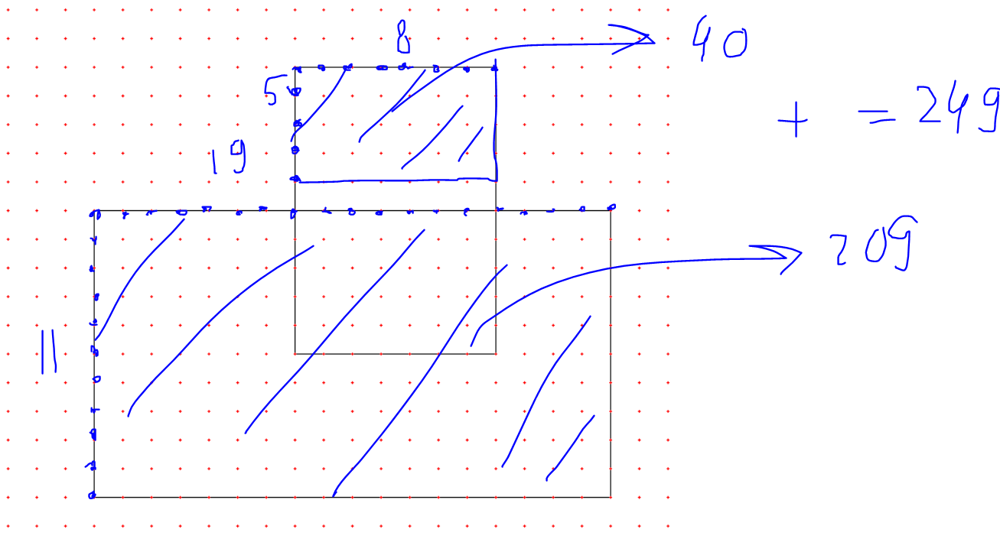
Ответ: 249.
Конкретно этот прототип черепашки редко отличается оригинальностью в условиях. Посмотрим на еще одно задание, почти такое же.
Пример 2)
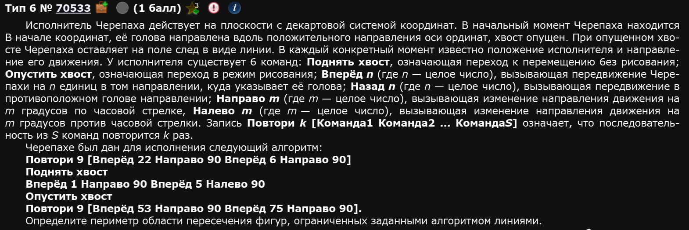
2 отличия от предыдущего:
Другой вопрос. В первом примере мы искали область объединения, а тут будем искать только область пересечения.
Другой алгоритм.
Код выглядит похожим образом:
from turtle import *tracer(0)#speed(5)screensize(1500,1500)k = 15lt(90)for n in range(1,10): fd(22*k) rt(90) fd(6*k) rt(90)up()fd(1*k)rt(90)fd(5*k)lt(90)down()for n in range(1,10): fd(53*k) rt(90) fd(75*k) rt(90)up()for x in range(-25, 25): for y in range(-25, 25): goto(x * k, y * k) dot(3,'red')exitonclick()
Выдает от вот такое:
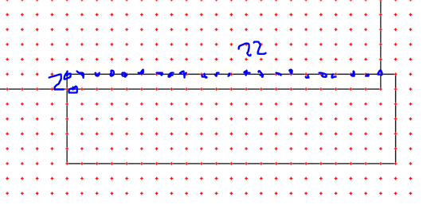
Ответ: 44
Пример 3)
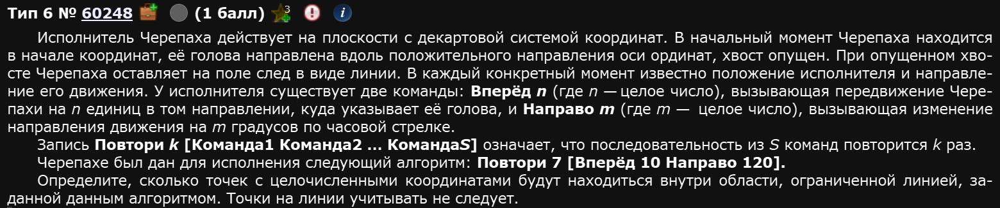
Все +- точно также.
from turtle import *tracer(0)#speed(2)screensize(1500,1500)k = 30lt(90)for n in range(1,8): fd(10*k) rt(120)up()for x in range(-25, 25): for y in range(-25, 25): goto(x * k, y * k) dot(3, 'red')exitonclick()
Такая программа выдаст следующее:
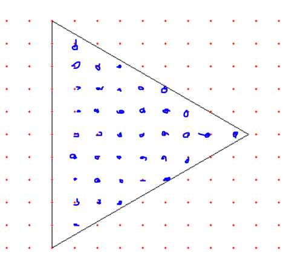
И вот если программа выдает что-то, что не может точно попасть во все точки, а вопрос из условия звучит так:
Определите, сколько точек с целочисленными координатами будут находиться внутри области, ограниченной линией, заданной данным алгоритмом. Точки на линии учитывать не следует.
То у нас нет другого выбора, кроме как буквально посчитать все нужные точки руками, без всяких хитростей.
Ответ: 38.
Пример 4)
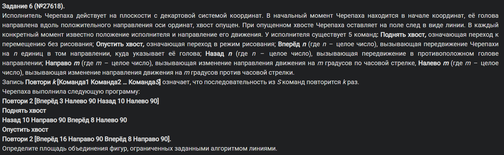
# №27618from turtle import *tracer(0)screensize(3000, 3000)k = 20lt(90)for i in range(2): fd(3 * k) lt(90) bk(10 * k) lt(90)up()bk(10 * k)rt(90)fd(8 * k)lt(90)down()for i in range(2): fd(16 * k) rt(90) fd(8 * k) rt(90)up()for x in range(-20, 30): for y in range(-20, 30): goto(x * k, y * k) dot(3, 'red')exitonclick()# Ответ: 152
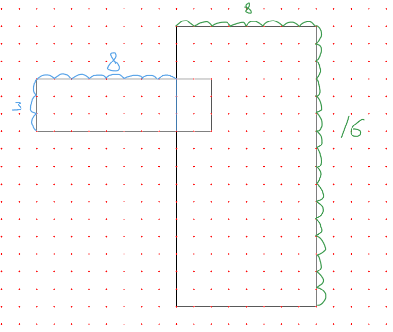
8∗3+8∗16=152
По поводу подсчета площадей
Когда просят посчитать площадь - считаем именно линии между точками, а не сами точки
Изменения 2026 года
Черепашка - одно из тех заданий, которые претерпели изменения на ЕГЭ 2026. Тенденция, к сожалению, в сторону усложнения. Например, есть такое условие:
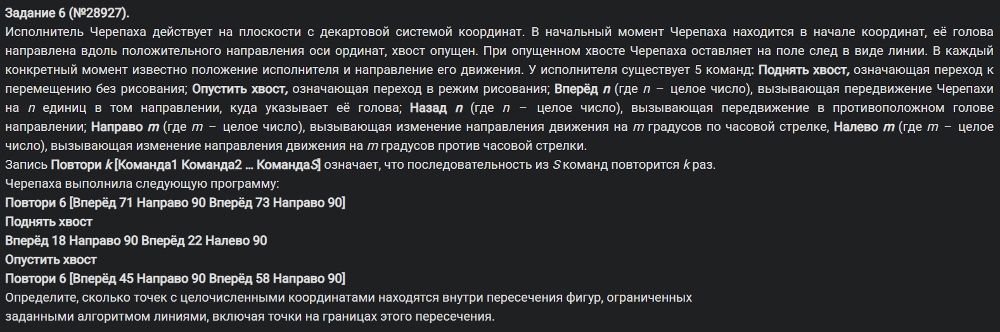
Если решать по шаблону, то решается оно вот так:
# №28927from turtle import *tracer(0)screensize(3000, 3000)k = 5lt(90)for i in range(6): fd(71 * k) rt(90) fd(73 * k) rt(90)up()fd(18 * k)rt(90)fd(22 * k)lt(90)down()for i in range(6): fd(45 * k) rt(90) fd(58 * k) rt(90)up()for x in range(-10, 100): for y in range(-10, 90): goto(x * k, y * k) dot(2, 'red')exitonclick()# Ответ: 2392
Однако, есть нюанс. Нюанс выглядит вот так:
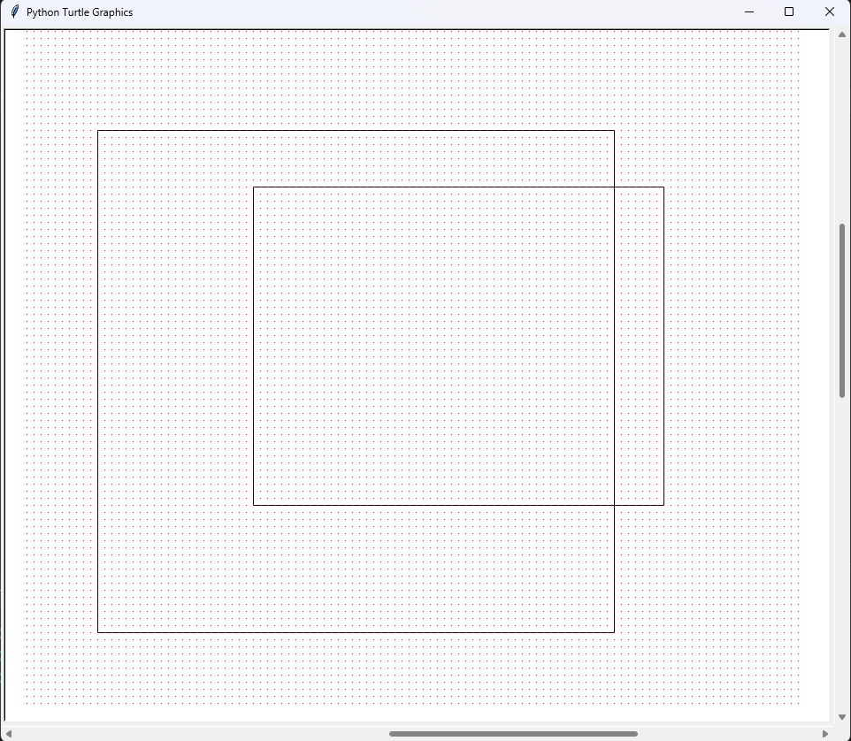
Это очень большие фигуры.
Danger
Именно в этом и заключается основная проблема новых номеров черепашки - большие цифры усложняют решение, поскольку вручную уже очень легко ошибиться с подсчетом.
Глобально, есть несколько выходов из этой ситуации:
На морально-волевых продолжать считать руками
Немного модифицировать координатную сетку, добавить несколько точек-ориентиров для удобства
Графический способ: проследовать за алгоритмом на бумаге, начертить то же самое и посчитать что требуется
Звездный путь: придумать универсальный код для этого тоже
Первый вариант не рассматриваем, поговорим о вариантах 2, 3 и 4.
Здесь будет только один такой пример с большими числами, хотя их в 2025-2026 годах было довольно много. В целом, просто решайте графическим способом и проблем знать не будете, господа хорошие.
Модификация координатной сетки
Собственно, выглядит она как-то так:
# Было'''for x in range(-10, 100): for y in range(-10, 90): goto(x * k, y * k) dot(2, 'red')'''# Сталоfor x in range(-10, 100): for y in range(-10, 90): goto(x * k, y * k) if (x * k) % 10 == 0 and (y * k) % 10 == 0: dot(5, 'blue') else: dot(2, 'red')
Что это меняет? Если раньше мы путались в огромном кол-ве красных точек, то теперь у нас вот такая ситуация:
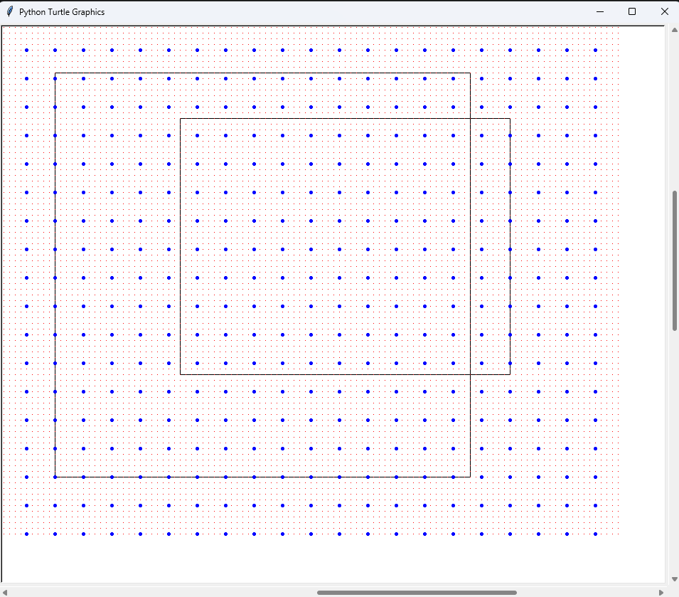
Как видно, каждая синяя точка отмечает каждую пятую точку. Можно добавить еще ориентиров, если хотите, тут приветствуются эксперименты. Считать стало чуть легче. Можно прикинуть, что прямоугольник пересечения имеет стороны 52 и 46 и таким образом ответ 2392.
Внимание
В этом способе ошибиться все еще довольно легко.
Способ графиком и калькулятором
Совет
Графический способ - самый универсальный и простой способ. Потому, что фигуры не обязательно могут быть прямоугольниками, не обязательно с параллельными осям сторонами, не обязательно повороты под 90 градусов. Никогда не знаете степень фантазии экзаменаторов. Из этого вытекают ограничения Звездного пути, о которых чуть позже расскажу.
В этом случае здесь нам понадобятся наши ручки и тетрадка. Собственно, нужно проследовать за алгоритмом и буквально на бумаге начертить то, что чертит он. Сделаем это.
Давайте себе выпишем отдельно алгоритм, который делает черепаха:
Мы начинаем с координат (0;0). Далее двигаемся вверх (вперед) на 71, поворачиваемся на 90 градусов и двигаемся вправо (вперед) на 73, снова поворачиваем на 90 градусов (смотрим вниз), снова 71 вниз (вперед), снова на 90 градусов, снова на 73 влево (вперед). По итогу получаем вот такое:
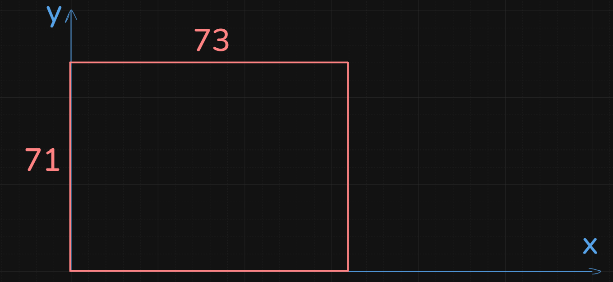
В конце этого пути черепашка снова в координатах (0;0) и снова смотрит вверх. Далее, она поднимает хвост (перестает рисовать) и идет вперед (вверх, по y) на 18, затем поворачивается на 90 градусов и идет вперед (вправо, по x) на 22. Таким образом, черепашка оказывается вот здесь:
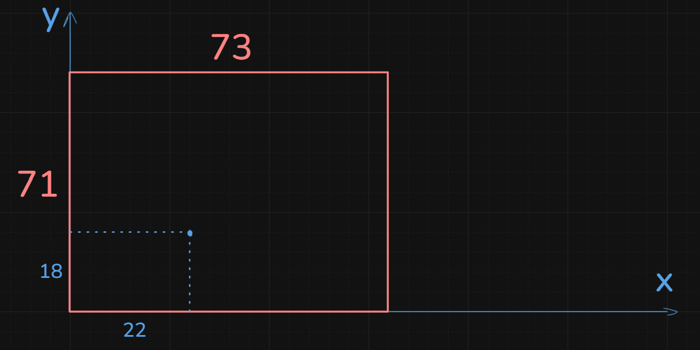
Смотрит она все еще вверх, там последняя команда была Налево 90.
Ну и теперь второй цикл действий: Повтори 6 [Вперед 45 Направо 90 Вперед 58 Направо 90]. Аналогично первому, просто строим прямоугольник.
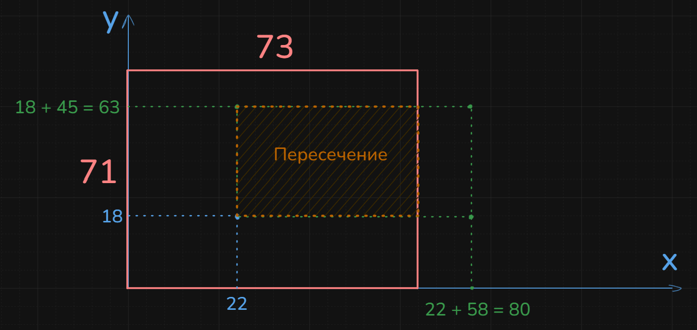
Ну и все. Осталось посчитать площадь прямоугольника “Пересечение”:
По оси Х: с 22 до 73 т.е. длина стороны по X - это 51
По оси Y: с 18 до 63 т.е. длина стороны по Y - это 45
Тока это длины сторон, а нас просили именно:
Сколько точек с целочисленными координатами находится внутри пересечения фигур …
Т.е. нам надо к каждому числу добавить + 1. Ну потому, что чисел от 22, 23, 24, ..., 73 - ровно 52, а не 51.
Таким образом, ответ 52 * 46 = 2392
Звездный путь
Этот код имеет следующие ограничения:
Он сработает только для прямоугольников (повороты должны быть 90 градусов)
Он сработает только если пересечение действительно есть
Итак, код:
С вашего позволения, я не буду это объяснять, воспользуюсь помощью ИИшки: